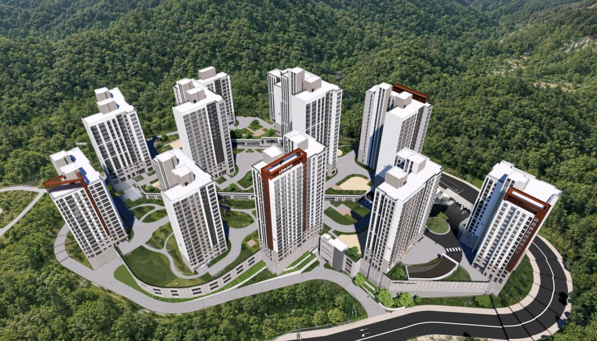
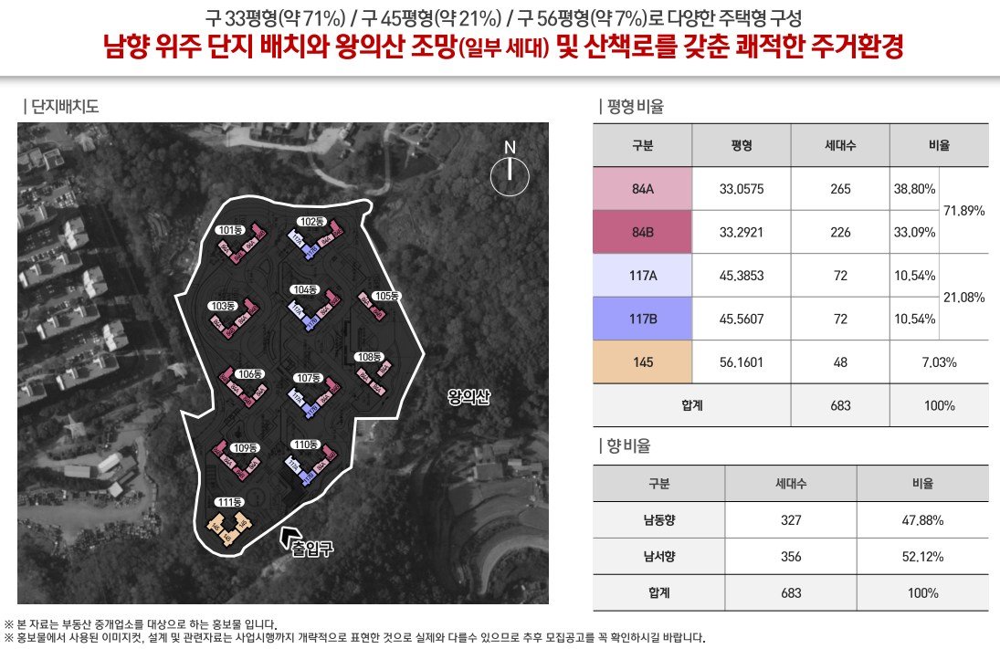
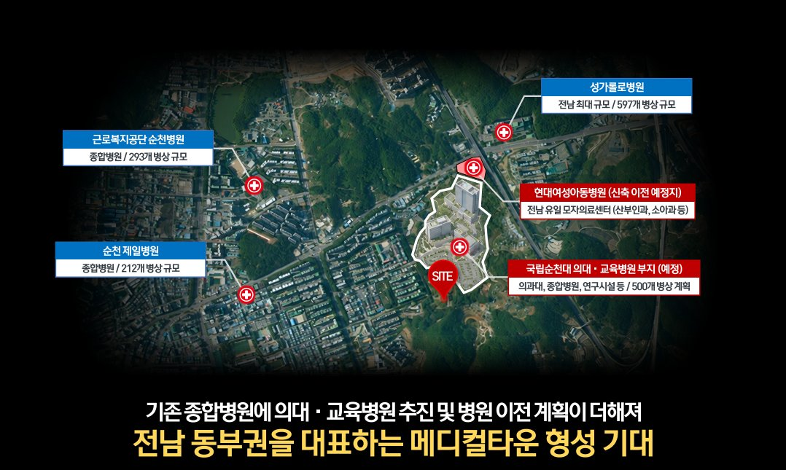
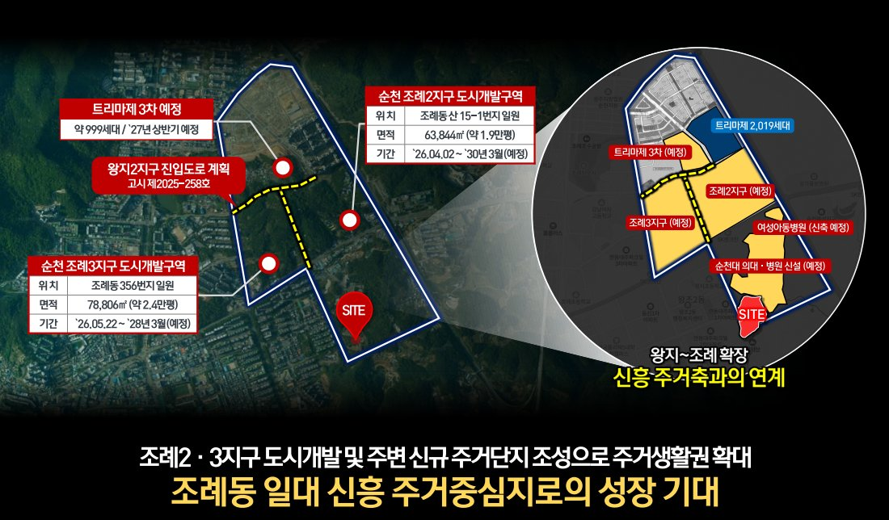

전남 순천시 조례동 왕지지구, IPARK현대산업개발이 짓는 지하 4층~지상 22층 11개 동 683세대. 남향 위주 세대 배치와 특화 조경으로 완성되는 프리미엄 주거공간을 가장 먼저 만나보세요.

단지 조감도 · 실제와 차이가 있을 수 있습니다옛 쌍용자동차학원 부지에 들어서는 왕지지구 랜드마크. HDC현대산업개발의 50여만 가구 공급 노하우가 더해집니다.
| 사업명 | 아이파크 순천 센트럴 |
|---|---|
| 위치 | 전남 순천시 조례동 60-16번지 일원 |
| 지역지구 | 제2종일반주거지역 |
| 대지면적 | 39,301㎡ (약 11,888.55평) |
| 규모 | 지하 4층 ~ 지상 22층, 11개 동, 683세대 |
| 평형구성 | 84A · 84B · 117A · 117B · 145 (5개 타입) |
| 주차대수 | 1,064대 (공동주택 1,060대·근생 4대) · 세대당 약 1.55대 |
| 사업비 | 2,450억원 |
| 착공 | 2026년 말 예정 |
| 준공 | 2029년 하반기 목표 |
| 시행사 | ㈜영림개발 |
| 시공사 | IPARK현대산업개발(HDC) |
"조례동은 순천 내에서도 주거 선호도가 높은 지역인 만큼, 지역을 대표하는 랜드마크로 조성하겠다는 계획입니다. 50여만 가구를 공급해온 노하우를 바탕으로 안정적으로 사업을 추진하겠습니다."
구 33평형(약 72%) · 45평형(약 21%) · 56평형(약 7%), 5개 타입 683세대
84A 265세대 · 84B 226세대
117A 72세대 · 117B 72세대
111동 단독 배치 대형 평형
| 타입 | 세대수 | 비율 | 전용면적 | 주거공용 | 공급면적 | 공급(평) | 기타공용 (주차장 포함) | 계약면적 |
|---|---|---|---|---|---|---|---|---|
| 84A | 265 | 38.80% | 84.67 | 24.61 | 109.28 | 33.06 | 61.71 | 170.99 |
| 84B | 226 | 33.09% | 84.96 | 25.09 | 110.06 | 33.29 | 61.93 | 171.98 |
| 117A | 72 | 10.54% | 117.18 | 32.85 | 150.03 | 45.39 | 85.41 | 235.44 |
| 117B | 72 | 10.54% | 117.04 | 33.58 | 150.61 | 45.56 | 85.30 | 235.92 |
| 145 | 48 | 7.03% | 145.55 | 40.10 | 185.65 | 56.16 | 106.09 | 291.74 |
| 합계 | 683 | 100% | ||||||

※ 단지배치도·평형 및 향 비율은 사업 진행 과정에서 변경될 수 있으며, 실제와 다를 수 있습니다. 최종 내용은 입주자모집공고를 반드시 확인하시기 바랍니다.
* 부동산 배포자료(2026.11.04) 기준이며, 평면도·분양가는 추후 공개됩니다. 최종 내용은 입주자모집공고를 확인하시기 바랍니다.
교통·교육·의료·생활·자연·산업이 모두 가까운 왕지지구 중심 입지
KTX·SRT 순천역, 동순천IC 인접
왕지초·왕의중·팔마중·금당고, 조례동 학원가 인접
성가롤로병원·순천제일병원, 국립순천대 의대·병원 신설 예정
NC백화점·홈플러스·이마트, 조례·연향 중심상권
왕의산 조망(일부 세대)·산책로, 조례호수공원
동순천IC로 인근 산업단지 출퇴근 편리, 직주근접

성가롤로병원(597병상)·순천제일병원(212병상)·근로복지공단 순천병원(293병상)이 가깝고, 단지 인근에 국립순천대 의대·교육병원(500병상 계획)과 현대여성아동병원 신축 이전이 예정되어 있습니다.
| 의대 후보대학 선정 | 국립순천대 | '26.08.30 |
|---|---|---|
| 계획 부지 | 조례동 산 13-3 일원 | '26.08.28 확약 |
| 의과대학 | 입학정원 60명 | '30학년도 개교 목표 |
| 교육병원 | 500병상 | '29.09 착공 · '32.09 개원 목표 |

조례2지구(63,844㎡, '26.04~'30.03 예정)·조례3지구(78,806㎡, '26.05~'28.03 예정) 도시개발과 트리마제 3차(약 999세대, '27년 상반기 예정), 왕지2지구 진입도로 계획으로 주거생활권이 확대됩니다.
조례동은 순천 내에서도 주거 선호도가 높은 지역인 만큼, 지역을 대표하는 랜드마크로 조성하겠습니다. 50여만 가구 공급 노하우를 바탕으로 안정적인 사업 추진을 약속드립니다.
지금 등록하시면 분양 일정과 청약 정보를 가장 먼저 안내해드립니다. 등록은 무료이며, 계약 의무가 발생하지 않습니다.
아래 정보를 남겨주시면 담당자가 순서대로 안내드립니다.